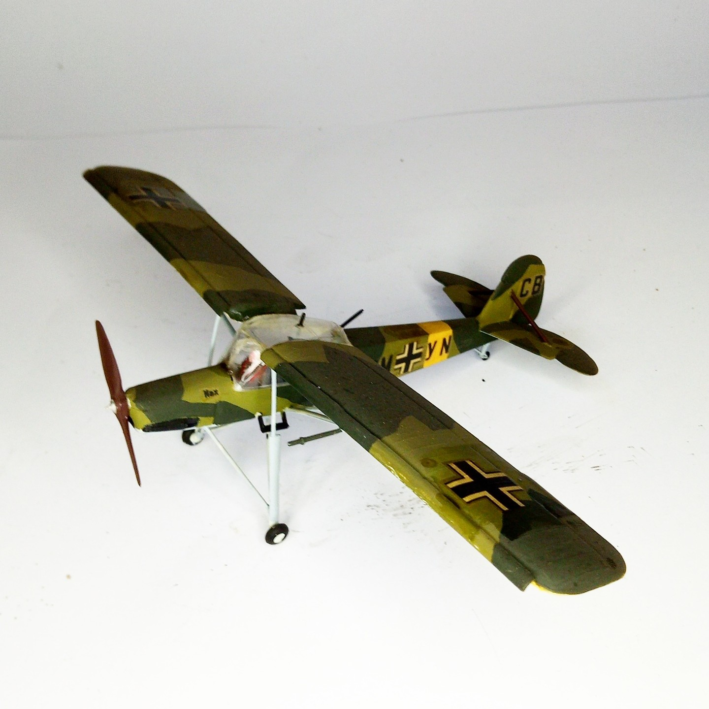

Aerei · scale model archive
Fiesler Fi156 Storch
Fiesler Fi156 Storch — Kit: Airfix, Scale: 1/72. Model by Franco Donati #1/72 #Airfix

Photo gallery
English description
Model by Franco Donati
#1/72 #Airfix
Descrizione italiana
Modello di Franco Donati.